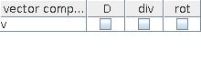

DIFFERENTIAL OPERATIONS
The module performs basic differential operations for regular fields applying central differences.
Input data
The input field is regular.
Output data
The output field is regular.
Computation parameters

In the first table all scalar components of the input field are listed, in the second table all vector components.
For scalar components the user can calculate:
For vector components the user can calculate:
In order to carry out the operation the appropriate check box has to be switched on.

The module is activated by clicking the run button, unless the auto check box on the right hand side of the run button is switched on.